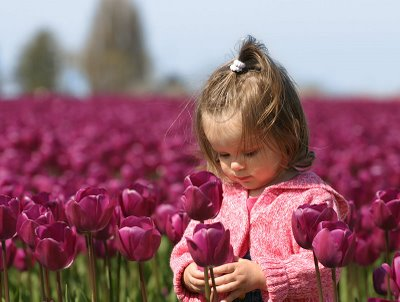

 تعددت مفاهيم السعادة واختلفت واستقر الرأي علي أن الجميع يحيون تلك الحياة باحثون فيها عن السعادة عن معالمها عن أبوابها عن سبلها ولكن الوجه الوحيد والعامل السائد في رحلة البحث عن السعادة هو الحب فمما لاشك فيه أن السعادة تتحقق عندما يدق القلب ويتعلق الفؤاد مع اختلاف العالق به فهناك من يحب المال وجمعه فيتوهم أن سعادته فيه وهناك من يحب مكان ما وتتعلق به نفسه فيتوهم أيضا أن سعادته فيه وهناك من يحب شخصا وتتعلق روحه به فيتوهم أيضا أنها السعادة ودعوني أتوقف قليلا عند كلمة يتوهم هل الحب وهم؟؟ وهل السعادة عنوان الوهم ؟؟؟؟؟ هذا يعيدنا لمفهوم أعم وأشمل للحب هل الحب مجرد تعلق بشيء ما ؟؟ أو شخص ما؟؟؟ أو مكان ما؟؟؟ هل الحب تعود؟؟؟أم أن الحب له مفهوم أخر؟؟ من نحب؟؟ولماذا؟؟
كلها أسئلة لا يعترف القلب بجواب لها ولايؤمن بكونها تستحق الاجابة بينما يتوقف عندها العقل كثيرا عندما يكون القلب في حالة سكون واطمئنان بلا شاغل يثير بداخله مشاعر ثائرة علي تساؤلات العقل ربما لا يوجد أكثر من المفسرين لمعني الحب وعلاقته بالسعادة وربما أيضا تثبت لنا الحياة يوما بعد يوم تعدد المفاهيم واختلافها وهذا شيء لايثير العجب لاننا لم نتحدث عن حقائق كونية ولا معادلات رياضية انما نحاول جاهدين التعمق في مشاعر بشرية لاتخضع لمنطق ولا قانون انما المحرك الرئيسي لها القلب ودقاته وخفقاته
واذا عدنا لموضوع السعادة فمن وجهة نظري أن السعادة لا تتحقق الا بالحب ولكن ليس بحب مكان ولا زمان لا مال ولا انسان انما تتحقق بالحب النابع من القلب لكل كيان تتحقق بلفظ معاني الشر من قلب كل انسان نصل اليها عندما نرمي بأزهار الحب الحمراء في كل مكان وبلا انتظار ولا رجاء بلا ترقب ولا توجس خشية أن يقابل حبنا بجرح وأن تقابل الورود بأشواك تدميها فمن كان قلبه لاينثر سوي ماءا ليروي به عطش الارض الجدباء لاينتظر الخضار وانما سعادته الحاقة في ريه وحبه المنثور علي أرض أملا نشر الخير بها.